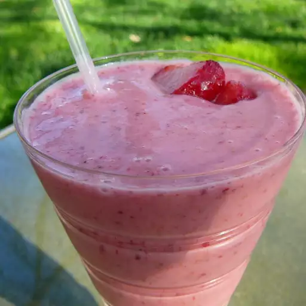

Strawberry Banana Smoothie

Description
This is the best strawberry banana smoothie recipe. Our whole family starts nearly every day with this thick, delicious smoothie.
Ingredients
- 1 ½ cups vanilla yogurt
- 2 bananas
- ½ cup frozen strawberries
- 2 tablespoons wheat germ
- 1 tablespoon honey
Steps
-
Combine yogurt, bananas, strawberries, wheat germ, and honey in a blender; blend until smooth, about 1 minute.